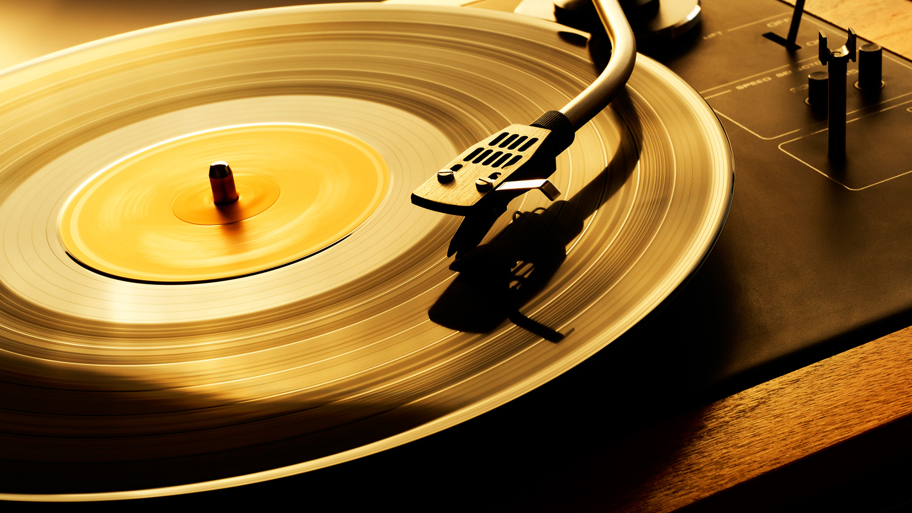

Vinyl Records are simply media storage in the form of a rotating disc. These analog music storage devices feature inscribed modulated spiral grooves and are typically 12 inches, 10 inches, or 7 inches in diameter.These round, flat vinyl disks with spiral grooves have brought music to the ears of listeners around the world for more than a century. Even through the advent of digital technology, vinyl records remain amazingly popular, and have even enjoyed a resurgence in recent years
